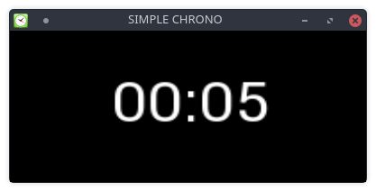

Déjà passionner par l'informatique et surtout son pendant programmation, j'ai dirigé mes études
vers un IUT informatique, mais le niveau de certaines matières mon amenée à abandonner et à me tourner
vers un BTS Systèmes électronique, avec toujours plus d'attention lors des sujets pour la programmation
de microcontroleur.
Toujours intéresser par la création, j'envisage aujourd'hui une reconversion avec
pour objectif de devenir développeur indépendant. Car Père de 2 enfants j'aspire à passer
plus de temps avec eux, être présent pour les emmenée ou aller les cherchez à l'école.
Mon projet je pense me permettrais d'allier une carrière professionnelle et une vie de
famille comme je le souhaite.
Diplomes:
Bac STI éléctronique
BTS Systèmes éléctronique
Experiences professionnelles:
Animateur centre de loisirs
Technicien d'integration Thales Avinoics
Technicien en métrologie Europe Qualité France
Développement des procédures de test avec le logiciel METCAL
Le code et moi:
J'ai commencé à m'intéresser a l'informatique a l'age de 15 ans,
cela a commencé par la découverte de l'OS Ubuntu, j'ai ensuite migré
vers Debian la distribution "mère" d'Ubuntu.
L'utilisation de ces systèmes alternatif a Windows mon permis d'utiliser
la console pour les taches courantes telle que création de dossiers ou fichiers,
organisation des documents.
C'est là que j'ai commencé a écrire quelque script bash me permettant entre autre
de faire simplement les sauvegardes de mes données.
J'ai par la suite découvert le site web le site du zero (aujourd'hui open class room).
Ce site m'a permis de découvrir les bases du HTML et du CSS, puis j'ai commencé le javascript
mais celui-ci ayant pour réputation de n'être utile qu'à faire des effets sur pages web, il n'a pas attiré mon
attention.
Je me suis tourné vers le C avec comme objectif le développement de jeux vidéos.
C'en est suivi le passage au C++ et la logique de la programmation orientée objet.
C'est ce language que j'utilise le plus souvent avec les bibliotheques Qt
pour les applications classiques, et la SFML pour les jeux.
Vous trouverez sur mon github plusieurs projets en cours d'autre plus ou moins abandonné par perte d'interet ou par manque de temps à y consacrer
Quelque projet presonnel:
Black Jack
L'un de mes projets les plus avancés et le jeux du black jack. Celui-ci a été développé
en C++ a l'aide de la librairie SDL puis il fut porté sur la librairie SFML.
Revtouver le code source du projet sur gitHub Black Jack
Principe du jeux:
La partie oppose tous les joueurs contre la banque. Le but est de battre
le croupier sans dépasser 21. Dès qu'un joueur fait plus que 21,
on dit qu'il « saute » ou qu'il « crève » et il perd sa mise initiale.
Au début de la partie le croupier distribue une carte face visible à
chaque joueur et tire une carte face visible également pour lui.
Il tire ensuite pour chacun une seconde carte face visible et tire
une seconde carte face cachée pour lui .
Puis il demande au joueur de la table l'option qu'il désire choisir.
Si le joueur veut une carte, il doit l'annoncer en disant « Carte ! ».
Le joueur peut demander autant de cartes qu'il le souhaite pour approcher
La valeur sans la dépasser. Si après le tirage d'une carte, il a dépassé 21,
il perd sa mise.
Valeur des cartes:
de 2 à 9 → valeur nominale de la carte
chaque figure + le 10 surnommées "bûche" → 10 points
l'As → 1 ou 11 (au choix)
Axe d'amelioration du projet
Pour ameliorer ce projet quelque point sont encore a modifier telle que
L'ajout de plusieurs joueurs, améliorer l'IA du croupier qui actuellement
ne vise qu'a dépasser les points du joueur alors qu'en casino celui-ci essaie de viser
entre 17 et 21 points. Dautre régles tels que L'assurance, Le split, doubler
Simple Chrono

Projet simpliste permettant d'emmètre un son lors de l'écoulement complet
du temps programmer (Très pratique pour ne pas rater son plat de patte).
Le Projet et developper en C++ et SFML. Une version Bash existe aussi mais moins
pratique car pas de son émis en fin de chrono.
Warhammer 40k:
Présentation
Warhammer 40k est un jeu de figurine développer par Games Workshop.
Le jeu se situe an l'an 40 mille, et permet de représenter des batailles
de cet univers en guerre opposant l'imperium face aux forces du chaos et
extraterrestres nommées xenos.
Ce hobby contient plusieurs parties:
Montage / Conversion de figurines
Peinture des figurines
Création d'armée grâce au réferencielle appelé codex
Batailles
Association
Pour profiter pleinement de ce hobby, je fais partie de l'association
du Maelstrom Tourangeau qui regroupe des joueurs de differents wargame.
Celle-ci nous permet de nous retrouver 2 fois par semaine et facilite l'organisation des parties amicales et de différents tournoi.
Comment joue-t-on?
Le déroulement d'une partie se fait au tour par tour chaque joueur déplace c'est figurine,
tir, puis combat au corps a corps.
La victoire est déterminée par un nombre de point gagné en remplissant des objectifs.